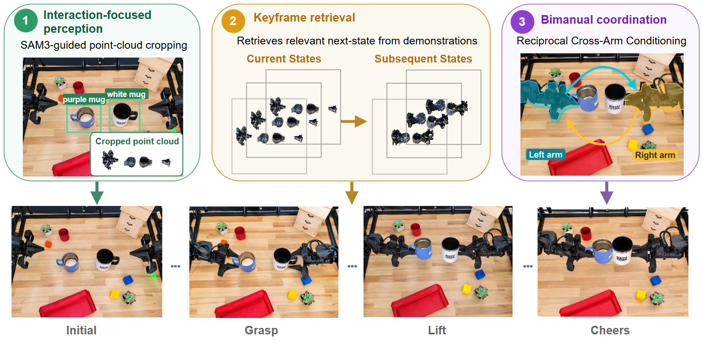
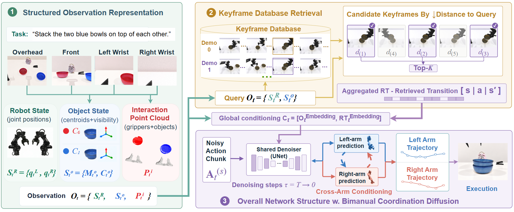

Interaction-focused observation
Language-grounded object selection and multi-view tracking yield task-relevant point clouds. Explicit object centroids and visibility complement robot state and object–gripper geometry.
Bimanual robot learning · Anonymous project page
Overview of interaction-focused perception, keyframe transition retrieval, reciprocal cross-arm conditioning, and results in simulation and on ALOHA. Captions are included in the video.
Abstract
Bimanual manipulation requires reasoning over task-relevant geometry and task progression while coordinating two arms under evolving scene conditions. 3D diffusion policies provide a strong framework for imitation-based manipulation, yet point clouds can leave task-relevant structure implicit, keyframe-based task progression often relies on manual annotation, and dual-arm control introduces synchronization and role-assignment challenges.
We introduce FOCAL-K, an interaction-focused 3D diffusion policy that addresses these challenges through object-grounded interaction geometry and explicit object state, automatically selected keyframes retrieved by robot–object state to provide transition context beyond demonstrated configurations, and reciprocal cross-arm conditioning throughout diffusion denoising. Together, these components provide structured spatial and transition context while reinforcing inter-arm coordination within continuous action generation.
Across ten RoboTwin 2.0 tasks, FOCAL-K achieves 69.0% / 24.5% average success under Clean / Randomized conditions, compared with 50.3% / 3.1% for Bimanual DP3 and 59.0% / 19.1% for π0.5; across three real-world ALOHA tasks, it achieves 60.0% / 68.3%, outperforming both baselines under both settings.

Multi-view observations identify the objects that matter. Retrieved keyframe transitions add task progression. A shared diffusion policy uses both signals to predict coordinated action chunks.

Language-grounded object selection and multi-view tracking yield task-relevant point clouds. Explicit object centroids and visibility complement robot state and object–gripper geometry.
An automatically built database selects salient states from demonstrations. The current robot–object state retrieves top-K keyframes and their successors as transition context.
During denoising, each arm’s intermediate action prediction conditions the other, refining coordinated trajectories under changing roles and contact states.
Perception in motion
A visualization from the project presentation compares estimated object centroids with ground truth during a real-world sequence.
Task-average success over ten RoboTwin 2.0 bimanual tasks. All policies are trained on Clean demonstrations; each run is evaluated on the same 50 episodes per condition, averaged across three training seeds.
+18.7 points over Bimanual DP3
+21.4 points over Bimanual DP3
Clean and Randomized conditions
Select a task and condition to inspect the reported result.
Source: Table I in the paper. Success rate (%).
Space is reserved for matched FOCAL-K and baseline episodes. Add task videos in assets/rollouts/ and replace this panel when clips are ready.
Handover Block probes inter-arm transfer, Place Can Basket tests asymmetric multi-stage manipulation, and Mug Cheers requires precise dual-handle grasps and controlled in-air contact.
Pass an object between arms, then place it at the target.
One arm places the can; the other grasps and lifts the basket.
Grasp thin handles, lift both mugs, and align them in the air.
Reported success under Clean and Randomized evaluation.
Source: Table VII in the paper. Each evaluation round has 10 Clean and 10 Randomized trials; values are averaged across repeated rounds.
Selected evaluation clips
Short excerpts from the project presentation. Select a task to view each policy.
FOCAL-K